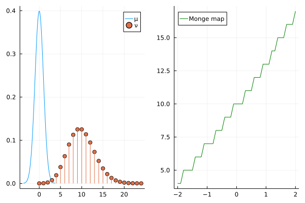
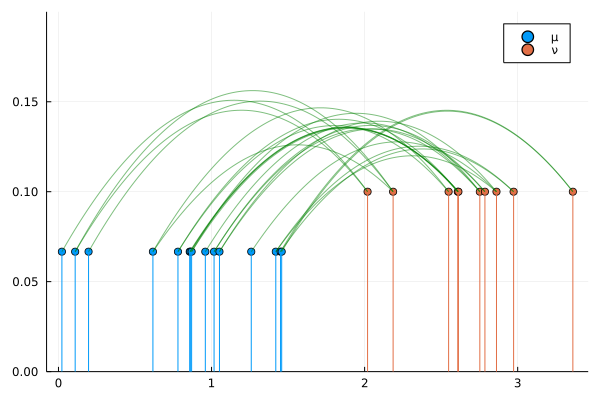

One-Dimensional Cases

You are seeing the HTML output generated by Documenter.jl and Literate.jl from the Julia source file. The corresponding notebook can be viewed in nbviewer.
The 1D case in Optimal Transport is a special case where one can easily obtain closed form solutions efficiently when the cost function is convex. In this situation, one does no need to use Linear Programming solvers to obtain the exact solution to the problem.
Packages
We load the following packages into our environment:
using OptimalTransport
using Distances
using Distributions
using StatsPlots
using LinearAlgebra
using Random
Random.seed!(1234);Continuous Distribution
In the 1D case, when the source measure $\mu$ is continuous and the cost function has the form $c(x, y) = h(|x - y|)$ where $h$ is a convex function, the optimal transport plan is the Monge map
\[T = F_\nu^{-1} \circ F_\mu\]
where $F_\mu$ is the cumulative distribution function of μ and $F_\nu^{-1}$ is the quantile function of ν. In this setting, the optimal transport cost can be computed as
\[\int_0^1 c(F_\mu^{-1}(x), F_\nu^{-1}(x)) \mathrm{d}x\]
where $F_\mu^{-1}$ and $F_\nu^{-1}$ are the quantile functions of μ and ν, respectively.
We start by defining the distributions.
μ = Normal(0, 1)
N = 10
ν = Poisson(N);Nest, we define a cost function.
c(x, y) = (abs(x - y))^2 # could have used `sqeuclidean` from `Distances.jl`
T = ot_plan(c, μ, ν);T is the Monge Map. Let's visualize it.
p1 = plot(μ; label='μ')
p1 = plot!(ν; marker=:circle, label='ν')
p2 = plot(-2:0.1:2, T(-2:0.1:2); label="Monge map", color=:green, legend=:topleft)
plot(p1, p2)
The optimal transport cost can be computed with
ot_cost(c, μ, ν)104.72027014853339If instead you want the 2-Wasserstein distance (which is the square root of the optimal transport with the Square Euclidean distatce, then use
wasserstein(μ, ν; p=2)10.233292243874079Finite Discrete Distributions
If the source and target measures are 1D finite discrete distributions (sometimes referred as empirical distributions, or as sample distributions), and if the cost function is convex, then the optimal transport plan can be written as a sorting algorithm, where the utmost left probability mass of the source is transported to the closest probability mass of the target, until everything is transported.
Define your measures as DiscreteNonParametric, which is a type in Distributions.jl. Also, let's assume both point masses with equal weights and let's use the sqeuclidean function instead of creating our own cost function.
M = 15
μ = DiscreteNonParametric(1.5rand(M), fill(1 / M, M))
N = 10
ν = DiscreteNonParametric(1.5rand(N) .+ 2, fill(1 / N, N))
γ = ot_plan(sqeuclidean, μ, ν);This time γ is a sparse matrix containing the transport plan. Let's visualize the results. We create a function curve just as a helper to draw the transport plan.
function curve(x1, x2, y1, y2)
a = min(y1, y2)
b = (y1 - y2 + a * (x1^2 - x2^2)) / (x1 - x2)
c = y1 + a * x1^2 - b * x1
f(x) = -a * x^2 + b * x + c
return f
end
p = plot(μ; marker=:circle, label='μ')
p = plot!(ν; marker=:circle, label='ν', ylims=(0, 0.2))
for i in 1:M, j in 1:N
if γ[i, j] > 0
transport = curve(μ.support[i], ν.support[j], 1 / M, 1 / N)
x = range(μ.support[i], ν.support[j]; length=100)
p = plot!(x, transport.(x); color=:green, label=nothing, alpha=0.5)
end
end
p
Again, the optimal transport cost can be calculated with
ot_cost(sqeuclidean, μ, ν)3.2925430197981305This page was generated using Literate.jl.